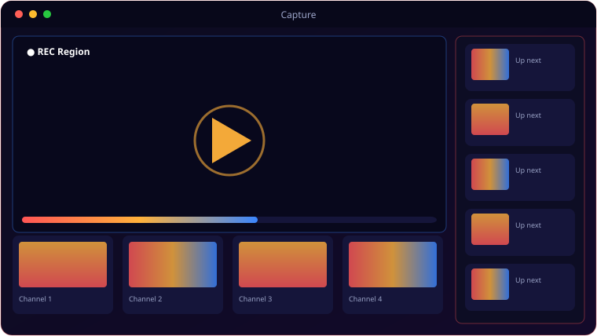

A look inside Capture.

Everything Capture brings to the table.
Three Capture Modes
Record a full monitor, a single window that follows if it moves, or a region you drag-select with an overlay.
Flexible Audio
None, microphone, system audio via WASAPI loopback, or both mixed together — your choice per recording.
Global Hotkeys
F9 starts, F10 stops — thread-safe and working even when the app isn't focused.
Editor-Friendly Output
CRF 18, ultrafast preset, muxed to a final MP4 that drops straight into Vegas Movie Studio.
Selectable Frame Rate
Record at 24, 30 or 60 FPS depending on whether you want size or smoothness.
Lean Pipeline
mss frame grab → FFmpeg stdin → temp files muxed on stop, so recording stays light.
System requirements.
Minimum
- OS: Windows 10 (64-bit) or Windows 11
- CPU: Quad-core, 2.5 GHz
- Memory: 8 GB RAM
- Graphics: OpenGL 3.3 / DirectX 11 GPU
- Storage: 500 MB + space for media
- Display: 1366×768 or higher
Recommended
- OS: Windows 11 (64-bit)
- CPU: 6-core, 3.5 GHz or better
- Memory: 16 GB RAM
- Graphics: Dedicated GPU for smooth real-time work
- Storage: NVMe SSD with several GB free
- Display: 1920×1080 or higher
Requires FFmpeg on PATH. H.264 encoding is CPU-bound — more cores mean higher frame rates at higher resolutions.
The details.
| Capture modes | Full screen (monitor select) · Window (follows movement) · Region (drag-select) |
| Output | MP4 H.264 + AAC, -crf 18 -preset ultrafast, Vegas-compatible |
| Audio | None / Mic / System (WASAPI loopback) / Both (mixed) |
| Hotkeys | F9 start · F10 stop |
| Frame rate | 24 / 30 / 60 FPS |
| Platform | Windows 10 / 11 · requires FFmpeg on PATH |
Get Capture.
A clean H.264 screen recorder, Vegas-ready out of the box.
⬇ Download CaptureCapture_Setup.exe · free · Windows 10/11 · FFmpeg required